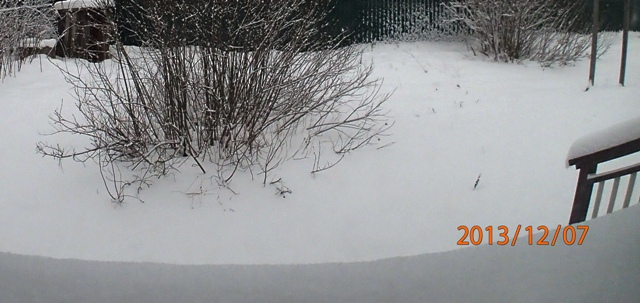
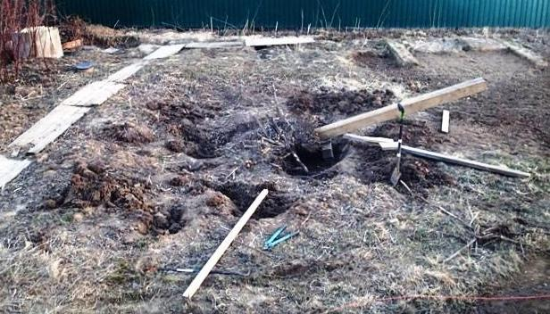
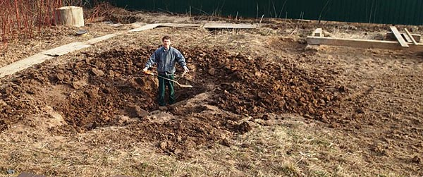

Как на месте куста получился пруд
Это вступление к статье и, одновременно, отступление от темы о том, как я сделал пруд на даче. Кого интересует только строительство пруда, можете сразу перейти на страницу пруд своими руками . Я работал 1 день в неделю не каждую неделю. Весь процесс без спешки занял 4 месяца.
Почва у нас - почти чистая глина. Уровень подземных вод такой, что вода в колодце в самую засуху на полметра ниже уровня земли. После каждой зимы забор по-новому перекашивается. За 5 зим ворота с одной стороны стали на 20см выше, чем с другой.
Тем не менее, эта земля плодородная для подходящих растений. Трава легко вырастает выше пояса. По всему участку в глубине травы растёт клубника. В одном всегда мокром углу участка - густые заросли ежевики и малины.
Берёзы и ивы вылезают то тут, то там. Они мешают не только посадкам, но даже мешают катить тачку. Я каждый год понемногу выкорчёвывал поросль берёз и ив. Пару высоких ивовых кустов сохранял для красоты, только обстригал лишние ветки, так как площадь куста каждый год увеличивалась вдвое.
Один год у нас была коза. Она поддерживала ровный уровень травы и не давала молодым побегам ивы разрастаться. Обкусала даже ёлку. Косить траву и вырезать кусты без козы стало утомительным трудом.
Один из кустов ивы, наконец, нам надоел, так как он смыкался с ежевикой, постоянно загораживал проход, мешал собирать ягоды.
Я ежегодно вырезал лишние заросли ивы и ежевики, но когда мы впервые сделали ежевичное варенье, и оно оказалось вкуснее малинового (прежний эталон самого вкусного варенья), то решили от ивового куста избавиться совсем. На его месте можно было бы посадить менее буйные цветочки.

2014-03-29 Завершение выкорчёвывания куста
После выкорчёвывания куста образовалась довольно большая яма. Чтобы раскопки были не напрасны - пусть здесь будет пруд.

2014-03-30
Лопата с верёвочной ручкой
чтобы меньше
наклоняться.
{kind=link}
Я стал увеличивать яму, чтобы добиться гармоничного размера, не слишком маленького, и не слишком большого по сравнению с домом и участком. Выкопанную глину использовал для выравнивания уровня будущего берега, так как перепад уровня в районе куста был до 50см.
Продолжение строительства пруда - конструкция берега, подача воды, фильтр и др.
2014-09